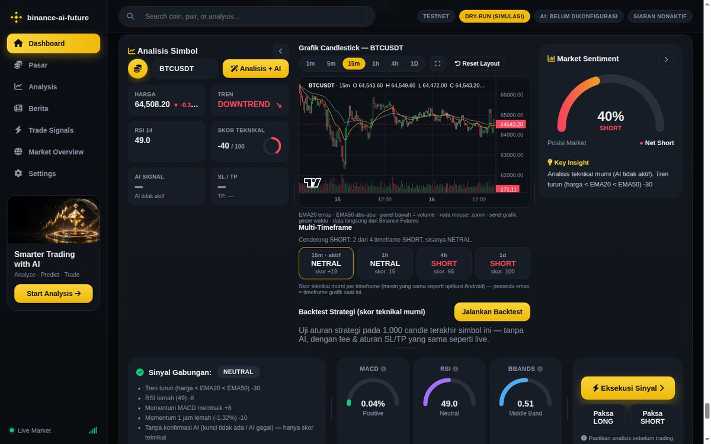
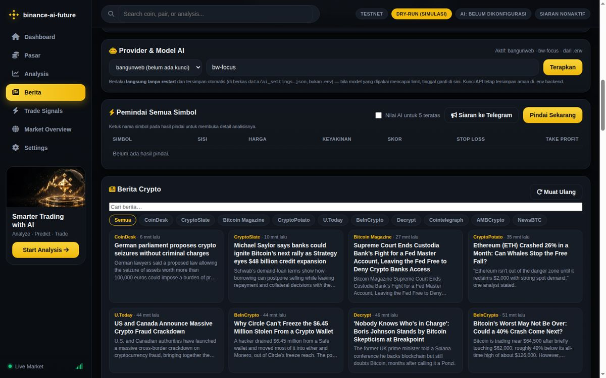
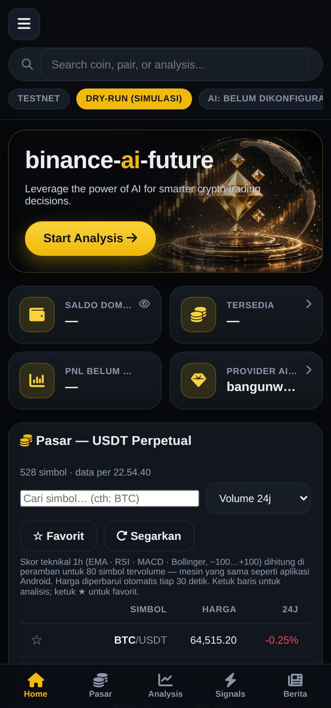
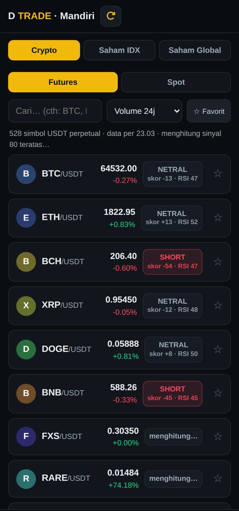
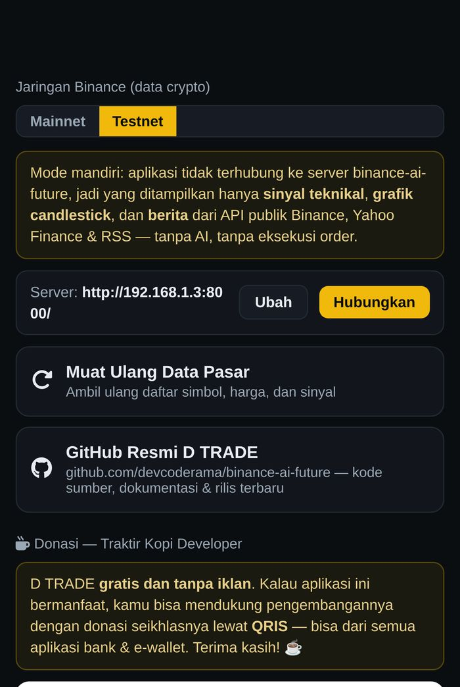

Satu sistem analisis Binance USDⓈ-M Futures — skor teknikal 12 indikator yang
dikonfirmasi AI — dalam tiga wajah: terminal CLI, Web UI, dan aplikasi Android.
D TRADE v1.27.0Default: testnet + dry-runDocker GHCR tersedia
Untuk yang hidup di terminal: dashboard interaktif dan perintah langsung,
jalan di mesin yang sama dengan server.
Dashboard interaktif
Tampilan Textual yang menyegarkan otomatis: ringkasan pasar, grafik candlestick
terminal, hasil backtest, dan status TESTNET · DRY-RUN yang selalu terlihat.
Perintah analyze
Satu perintah menampilkan skor teknikal −100…+100, arah sinyal, level SL/TP
dari ATR, dan alasan di balik skor — sebelum AI memberi konfirmasi atau veto.
Web UI Server
Antarmuka lengkap dari server python run.py web — dipakai dari
browser desktop maupun dari dalam aplikasi Android saat terhubung.
Dashboard & Pasar
Kartu saldo, PnL, dan provider AI aktif, plus tabel 528 simbol USDT perpetual
dengan harga live dan chip sinyal 1 jam. Klik ★ untuk favorit, klik baris untuk analisis.

Ruang kerja Analysis
Grafik candlestick dengan panel yang bisa digeser & diubah ukurannya, skor teknikal
+ alasan, gauge sentimen, Multi-Timeframe, indikator MACD/RSI/Bollinger, backtest,
dan kartu Eksekusi yang mengikuti mode server (dry-run/testnet).

Berita, Pemindai & Provider AI
Berita crypto dari 11 sumber RSS, pemindai semua simbol yang hasilnya bisa disiarkan
ke Telegram, dan panel ganti provider/model AI yang berlaku langsung tanpa restart.
Kenapa perlu server?
Di sinilah AI, eksekusi order, manajemen risiko, dan siaran sinyal Telegram berjalan.
Kunci API hanya tersimpan di berkas .env server — tidak pernah di HP
atau di browser. Web UI dilindungi token login (admin & viewer).
Android — Terhubung ke Server
D TRADE membuka Web UI server di dalam aplikasi: semua fitur server
(AI, saldo, eksekusi sesuai mode server) tampil di HP.

Beranda server di HP
Hero, kartu saldo/PnL/provider AI, dan tabel Pasar — persis Web UI desktop,
dioptimalkan untuk layar sentuh dengan navigasi bawah.
Analisis di HP
RSI, skor teknikal, grafik TradingView, dan Multi-Timeframe dari server.
Perhitungan & eksekusi terjadi di server; HP hanya menampilkan.
Cara menghubungkan
1. Jalankan server binance-ai-future.
2. Di D TRADE, buka tab Lainnya.
3. Isi URL server, mis. http://192.168.1.3:8000.
4. Ketuk Hubungkan, lalu masuk dengan token Web UI.
Putuskan kapan saja — aplikasi kembali ke mode Mandiri.
Android — Mode Mandiri (Tanpa Server)
Tanpa server pun D TRADE penuh: sinyal teknikal murni dihitung di HP dari
API publik — tanpa AI, tanpa kunci API, tanpa eksekusi order.

Pasar multi-market
528 crypto Futures + Spot Binance, 99 saham IDX, dan 60 saham global — dengan chip
sinyal, favorit ★, dan cache agar daftar tampil seketika saat dibuka.
Analisis 12 indikator
Skor dari EMA, MACD, ADX, Supertrend, RSI, Stochastic, Bollinger, ROC, VWAP, pola
candle & support/resistance; grafik live, Multi-Timeframe, rencana Entry·TP·SL,
dan tombol Bagikan analisis sebagai gambar + teks.
Grafik layar penuh + alat gambar
Perbesar grafik (portrait/landscape), geser mengikuti jari ke riwayat, dan gambar
ala TradingView — tren, garis horizontal, kotak, bebas — yang bisa digeser, diubah,
dihapus satu per satu, dan tersimpan per simbol.
Berita 16 sumber
Berita crypto & pasar dari 16 RSS termasuk media Indonesia; bisa dicari, difilter
per sumber, dan dibaca di dalam aplikasi dengan terjemahan otomatis ke Bahasa Indonesia.

Pengaturan & pintu mode terhubung
Ganti jaringan Mainnet/Testnet, atur URL server untuk mode terhubung, dan dukung
pengembangan lewat QRIS. Aplikasi gratis, tanpa iklan, tanpa kunci apa pun tersimpan.
Mandiri vs Terhubung?
Mandiri = analisis teknikal cepat di mana saja, cukup internet.
Terhubung = tambahan AI, saldo & posisi akun, eksekusi (sesuai mode server),
dan siaran sinyal Telegram.
Keduanya memakai mesin skor teknikal yang sama.
Mulai Cepat
1. Android (paling cepat)
Unduh APK rilis terbaru, pasang, langsung pakai mode Mandiri. Selesai.
2. Server (opsional)
git clone repo → salin .env.example ke .env →
python run.py web — atau pakai image Docker GHCR.
3. CLI
python run.py cli untuk dashboard, atau perintah langsung:
analyze, scan, backtest.